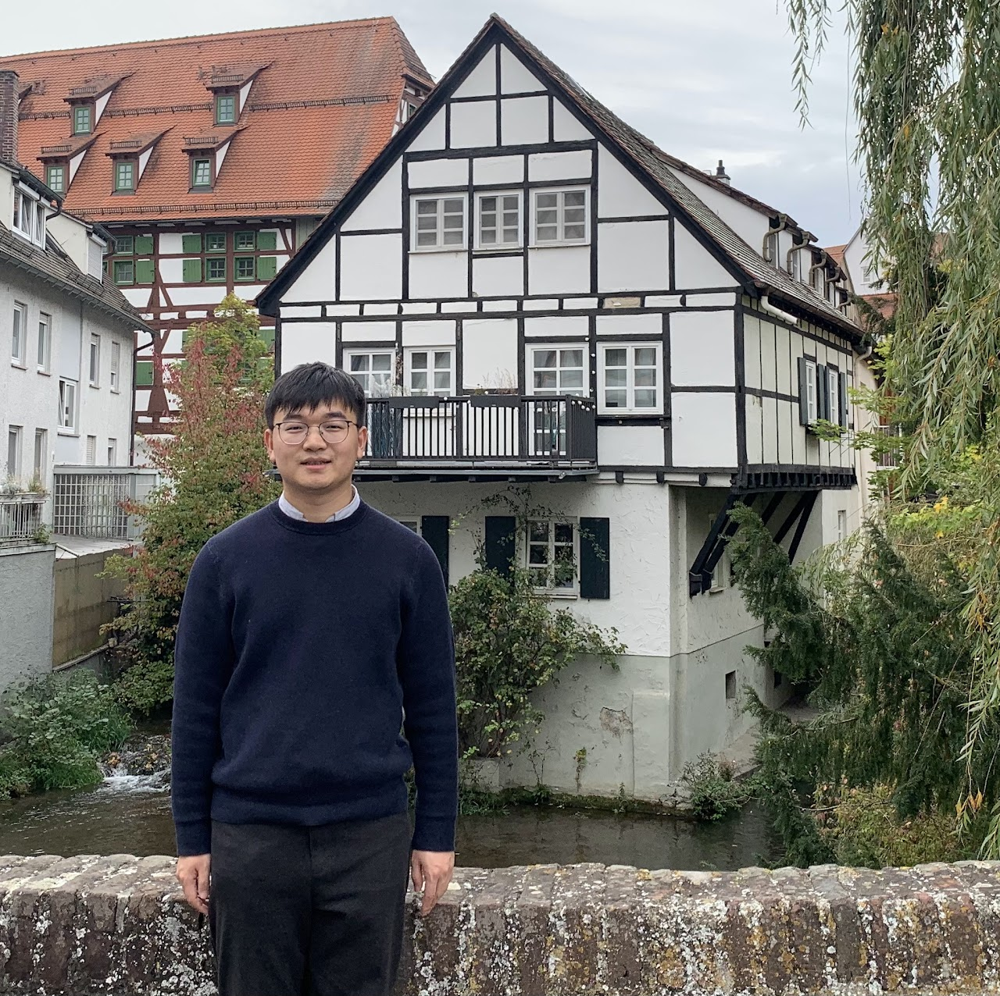

ULM@2023
Welcome to my website!
I am currently a Postdoc at Ulm University, working with Prof. Dr. An Chen at the Institute of Insurance Science (IVW). Before that, I was a Ph.D. student at Bielefeld University, supervised by Prof. Dr. Giorgio Ferrari at the Center for Mathematical Economics (IMW). For more details, refer to my CV and Google Scholar. Should you have any questions or inquiries, please feel free to contact me via: shihao.zhu@uni-ulm.de.
News
Aug 2026: 📚 Our paper "Modeling of Biological and Subjective Age with Economic Applications" (with An Chen and Maria Hinken) has been accepted by the Scandinavian Actuarial Journal.
May 2026: 📝 Our new working paper "Long-Term Care Insurance and Informal Family Care: A Subgame-Perfect Equilibrium Analysis" (with An Chen and Yichun Chi) is now online.
Mar 2026: 📝 Our new working paper "Nonconcave Portfolio Choice under Smooth Ambiguity" (with Emanuele Borgonovo, An Chen, and Massimo Marinacci) is now online.
Nov 2025: 📫 I am also serving as an associated postdoc within the DFG Research Unit 5583, where I take on a coordinating role, and I look forward to contributing to the group's work.